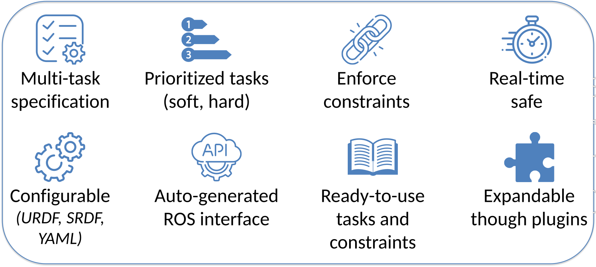

Welcome to CartesI/O’s documentation!¶
A novel Cartesian control framework with a focus on online control of multi-chained, hyper-redundant floating-base robots!
Features¶
{kind=link}
- multiple task specification
- ability to enforce soft priorities as well as hard priorities between tasks
- ability to specify constraints in the task execution
- small computation time (suitable for online execution)
- possibility to execute inside a real-time thread in order to reduce delays and jitter
- ease of configuration and use, quick setup time and ready to use control tools
- parametrized with standard description formats (e.g. URDF) in order to support multiple platforms
- handling of floating base robots
- heavily customizable through plugins, at almost all layers
How to install¶
Binaries are available at this link. Remember to pick the right version
for your specific Linux distribution. Currently, Ubuntu 16.04 (Xenial) and 18.04 (Bionic)
are supported, whereas support for 20.04 (Focal) is still experimental. After
extracting the archive, run the ./install script (requires sudo permissions).
To uninstall all packages, an ./uninstall script is provided as well.
To use the software, sourcing the installed environment script is required.
You can add the line source /opt/xbot/setup.sh to your .bashrc file.
Cite our work¶
..with the bibtex below!
@inproceedings{laurenzi19cartesio,
author={A. {Laurenzi} and E. M. {Hoffman} and L. {Muratore} and N. G. {Tsagarakis}},
booktitle={2019 International Conference on Robotics and Automation (ICRA)},
title={{CartesI/O: A ROS Based Real-Time Capable Cartesian Control Framework}},
year={2019},
pages={591-596},
doi={10.1109/ICRA.2019.8794464},
ISSN={1050-4729},
month={May},}
Contents¶
Start from here!